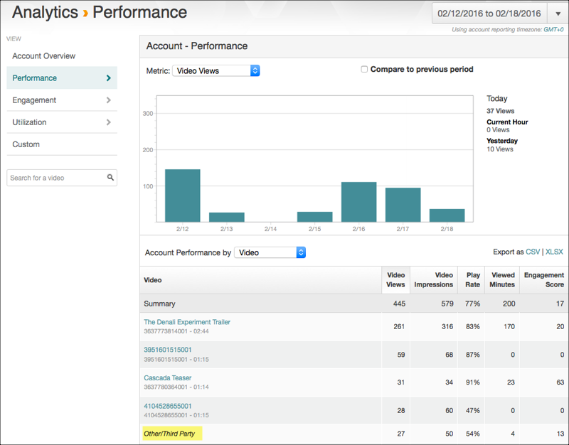
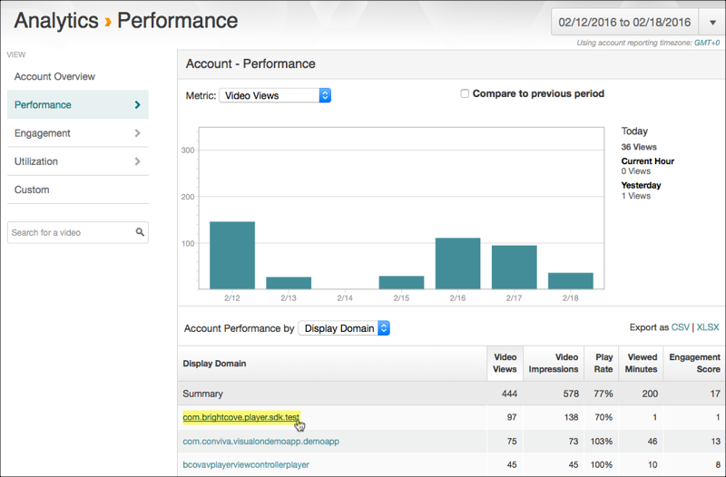
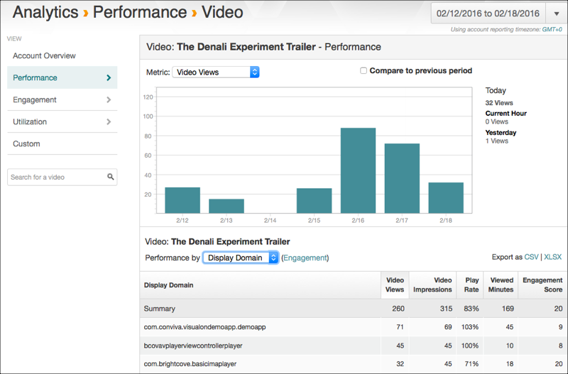
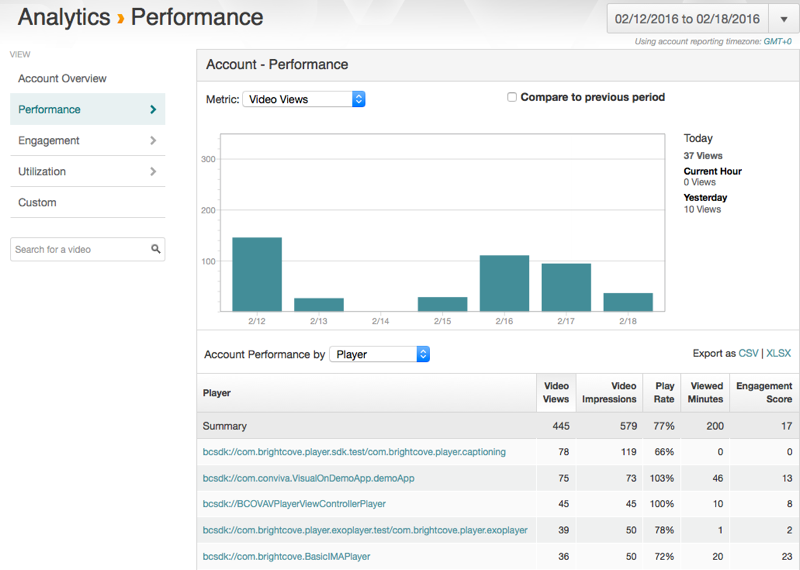
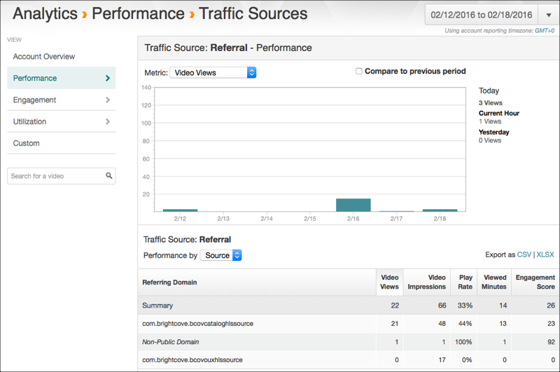
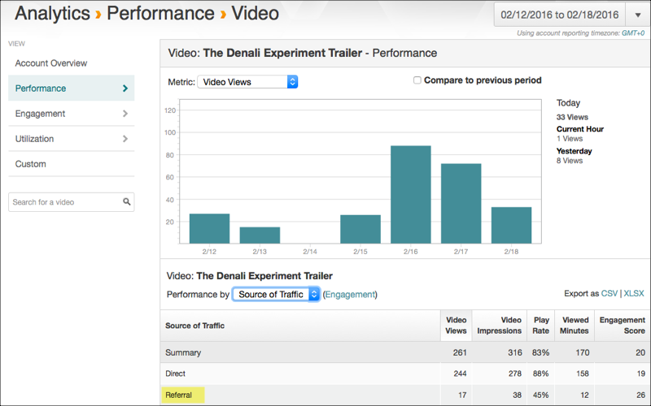

Viewing Brightcove Analytics
This feature is for Video Cloud customers only.
This topic describes how to view Brightcove Analytics for your apps which use the Brightcove Native Player SDKs.
In the Video Cloud Analytics module, you can view metric data at the account level or at a detailed level such as by video. For details about viewing the Performance reports in Video Cloud Analytics, see the Performance Report Reference document.
Here are some options for viewing your data:
Brightcove Analytics converts the destination and source values you’ve set to an all lower-case string value in all reports.
You can also learn about sending data to Video Cloud Analytics.
accountId
View the source values that you have set from your app.
accountId - video level
View video analytics where you have set the accountId.
In the Analytics module, mouse over Performance in the left-side menu and select Video from the context menu that appears.
The Other/Third Party list item will show a roll-up of performance from all the videos for which you have set the accountId property. You will not see these videos listed separately since Brightcove Analytics currently does not support detailed reporting for videos that are not retrieved through the Brightcove Catalog service.

destination
View the destination values that you have set from your app.
destination - account level
View the destination values that you have set at the account level.
In the Analytics module, mouse over Performance in the left-side menu and select Display Domain from the context menu that appears.
This Account Performance report lists destination values, including those you have specified in your app code.
- Select a destination domain to see the details.
destination - video level
View the destination values that you have set at the video level.
In the Analytics module, mouse over Performance in the left-side menu and select Video from the context menu that appears.
Select a video to view.
Expand the Performance by drop-down menu and select the Display Domain option.
This Video Performance report lists destination values, including those you have specified in your app code.

player
View the players at the account level which are used in your app.
player - account level
View player analytics for players in your app.
In the Analytics module, mouse over Performance in the left-side menu and select Player from the context menu that appears.

source
View the source values that you have set from your app.
source - account level
View the source values that you have set at the account level.
In the Analytics module, mouse over Performance in the left-side menu and select Source of Traffic from the context menu that appears.
In the Summary list, select the Referral link to view a detailed report by source.
This Account Performance report will include the source values you have specified in your app code.

source - video level
View the source values that you have set at the video level.
In the Analytics module, mouse over Performance in the left-side menu and select Video from the context menu that appears.
Select a video to view.
Expand the Performance by drop-down menu and select the Source of Traffic option.
The Referral list item will show a roll-up of performance from all sources, including the source values you specified in your app code. Note that the Analytics module does not support drilling into this Referral view.

Sending data to Video Cloud
For details on how to send data to Video Cloud Analytics from your apps see the following:
If you use the Brightcove player and catalog included in the SDK to retrieve and play videos, analytics data will be automatically collected and will appear in the Video Cloud Analytics module.